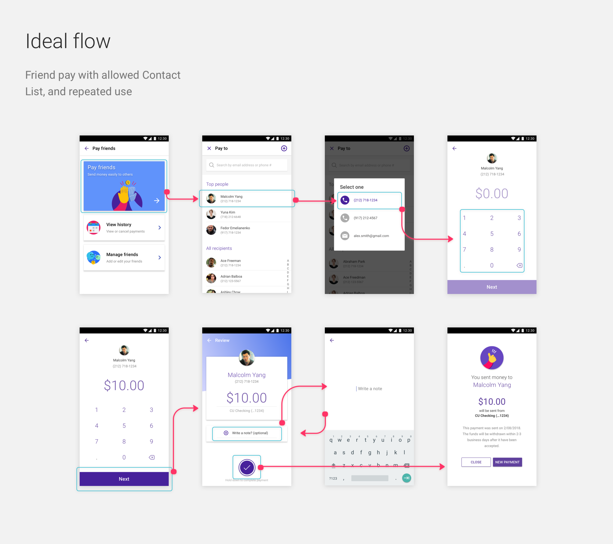
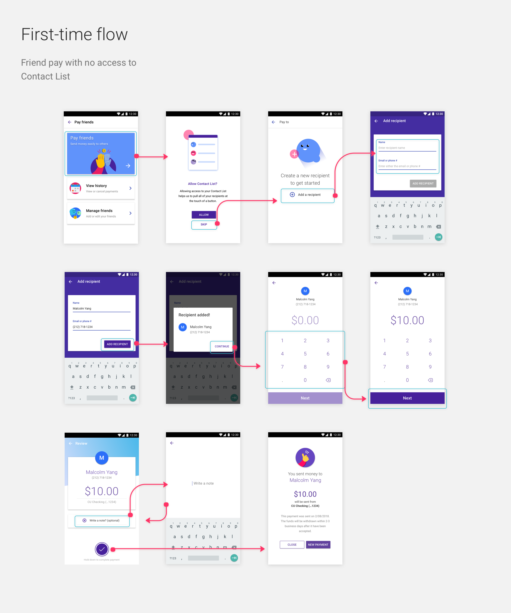

Urban FT - friend pay
Friend pay (p2p) feature for whitelabel fintech
Summary
Urban FT is a financial tech company that specializes in custom built, white-label apps for its clients, which includes
Sprint, Boost Mobile Wallet, and 70 + credit unions across the US.
For this particular piece, I wanted to showcase the process and end results for a friend pay fuctionality (p2p in industry
terms) that we were tasked to implement for its core white-label banking app. In order to maintain confidentiality, I’ve
changed the branding and designs of the application.
Friend pay in its current form, as presented by an api partner of Urban FT, was recorded to have a very low use percentage
among the users of the banking application. Most reasons pointed to bogged down features, long flows, and inability for immediate
access of the funds. Another big reason was because users were confused by all the different styles of “transfers” that were
readily available in the app.
Our proposed solutions became several “how might we’s.” Namely, how might we streamline this process, and how might we establish
the “first time” value of this feature so people can return to using it?
User testing
We started with paper prototypes, then used the valuable feedback we gained to iterate on an Invision prototype. For example,
as we theorized, none of the users were keen on setting up a security password system. P2p was something they wanted to do
immediately, in and out, and having extra steps for it was an immediate roadblock. In terms of the security scarce of sending
it to the wrong phone number, we weighed the need for a smooth flow to be more important than the slim use-case of sending
it to a wrong phone number. Furthermore, there is the option of cancelling the money transaction before it hits the recipient.
The same was the case for setting up date and frequency within the flow. We correctly assumed that p2p was most often times
a singular affair. Some users expressed favorably for the option to set a date, but was not keen on having to do it within
the flow. Furthermore, we were able to obtain data of the usage of the date and frequency feature from our api partner, and
it numbered extremely low. Thus, we adjusted the flows by having the date pre-filled in the review screen, and getting rid
of the frequency option entirely.
Design
Atomic design: creating from components
For creating our high-fidelity components, we designed from a modular, component based approach. By doing so, and converting
these components into Sketch symbols, we are able to easily drop in and out components like Lego blocks to create screens;
extremely valuable to do, especially for a white-label product where branding must be changed for all of its clients.
Component-based approach (above)

High-fidelity screens (above)

High-fidelity screens (above)